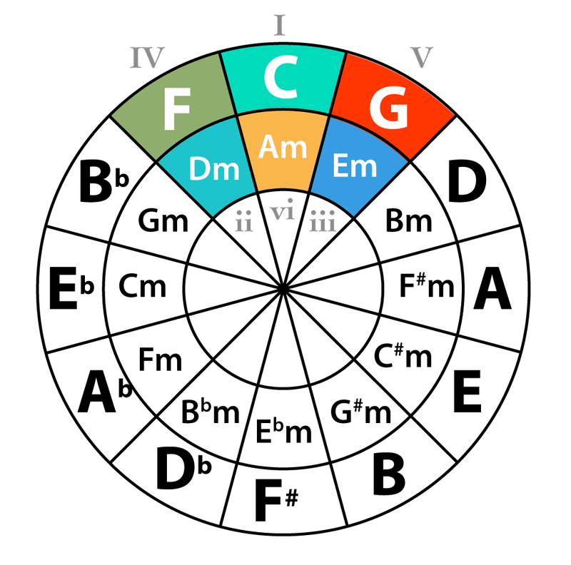

Hitmaker is a chord generator that allows songwriters to get harmonic inspiration when they start writing a song. By analyzing the mood and energy parameter inputs it's given, Hitmaker can generate MIDI files of chord progressions accordingly, from its dataset of over 1000 chord progressions from songs with proven commercial success!
Harmony is the cornerstone of a song's emotional aspect and it can be complex and highly subjective. To quantify it, I used valence and energy index from Spotify API's track data. Valence measures a song's sentiment, with a high valence indicating happy, joyful, and a low valence indicating sad and depressed. Energy informs the activity and intensity of the song. My idea is to associate each BillBoard hits with their mood and energy values, and send their chord progressions if the values falls within range of user's input.
Demo
Experience Hitmaker in action with its simple, intuitive user interface. As shown in the video, generated MIDI files can be effortlessly imported into DAWs, enhancing creative workflow.
A significant challenge I faced was converting chord progressions from string format into MIDI files. While the Music 21 library offers Pitch and Interval classes that can directly convert to MIDI, it does not support chord name conversion. So, I developed a parser that decomposes any chord (e.g., Amin9) into its root (A) and other notes represented as intervals (m3, P5, m7, M9 in this case).
I also gained some experience in developing UI and building MacOS Apps. To improve user experience, I added a play preview feature. I used PyGame's sound engine and implemented threading so that the preview can be interupted and retriggered normally.